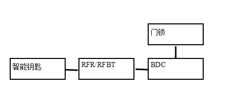

说明：本遥控防盗器采用两键式，闭锁键为防盗设防，开锁键为防盗解除。
预设防状态
1. 进入预设防：当整车电源状态为OFF 状态且所有车门关闭的情况下，BDC 总线上发出“闭锁”信号，四车门闭锁同时整车进入预设防状态。
2. 退出预设防：进入预设防 Tp（Tp 可配置为15s、25s、35s、45s）内以下任意条件满足后整车退出预设防状态进入解除设防状态。
2.1 打开任意车门；
2.2 电源状态变为非 ON 档；
2.3 接收到遥控/蓝牙/远程/PE解锁信号；
2.4 接收到总线上发来的“IMMO 认证成功”信号；
2.5 进入预设防 Tp 内，如果遥控打开行李箱，则整车保持在预设防状态，关闭行李箱的Tp 后整车进入设防状态；
2.6 如果以上任意条件未发生，Tp 后整车从预设防状态进入设防状态。
设防状态
进入设防： 在退出预设防功能中描述了进入设防的条件。具体参见退出预设防功能。 在二次防盗功能中进入设防的条件。具体参见二次防盗功能。
解除设防：不管整车处于何状态下，当整车电源状态为OFF，只要BDC上发来的“解锁”信号，整车即进入或保持解除设防状态。当整车电源状态为非OFF，只要BDC 接收到EMS总线上发来的“IMMO认证反馈”信号值为“成功”，整车即进入或保持解除设防状态。
防盗激活状态
1. 防盗激活：
1.1 非遥控解锁或未接收到PEPS总线上发来的“解锁”信号时，打开任何一个门；
1.2 非遥控行李箱解锁或未接收到PEPS总线上发来的 “行李箱解锁”信号，打开行李箱门。
2. 防盗激活报警逻辑，根据配置情况，激活状态逻辑如下： 进入防盗激活状态TW（TW可配置为5s、10s、15s）时间后，则转向灯报警持续5分钟，同时喇叭鸣叫56声，并且防盗指示灯快闪；如果在转向灯报警5分钟后再有入侵信号，则再启动5分钟的光报警以及56次的声音报警。
3. 防盗解除：整车处于防盗激活状态时， 接收到PEPS总线上发来的“解锁”信号时，可以解除防盗激活，整车进入解除设防状态，同时转向灯闪烁四次，蜂鸣器报警模式为“退出防盗激活状态提示”。如果总线上接受到EMS发送的IMMO认证成功信号，也可以解除防盗激活，整车进入解除设防状态，同时转向灯闪烁四次，蜂鸣器报警模式为“退出防盗激活状态提示”，同时防盗指示灯熄灭。
4. BDC出厂时的状态为初始状态，并要在出厂时设置初始密码（具体见BDC诊断文件）。当BDC为初始状态时，其车辆防盗功能的状态为设防状态。如果BDC的密码为初始密码，则当防盗激活时，无灯光和声音报警，但是BDC总线上发送的状态信号仍然是设防状态（即arm状态）；如果BDC的密码不是初始密码，则当防盗激活时，按照正常逻辑执行（即要有灯光和声音报警）。
二次防盗
整车从设防状态或预设防状态进入解除设防状态后，若30秒内车门未打开，则BDC将所有车门上锁，整车进入设防状态。 注：BDC重新上电时要保持掉电之前的防盗状态。同时出厂配置时，BDC的状态是设防状态。
